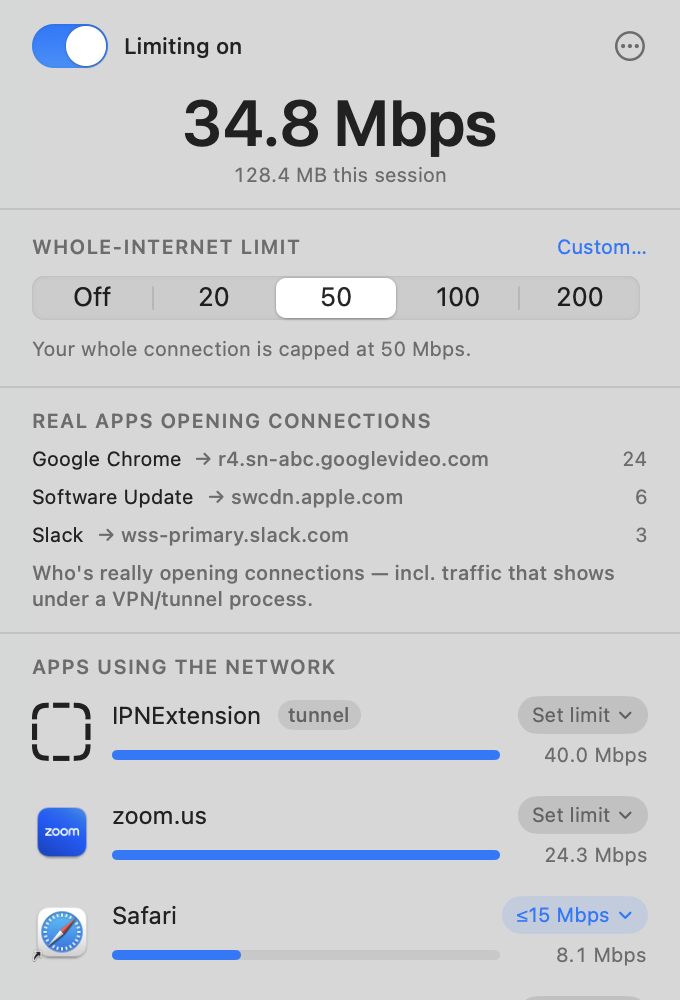

Keep one app — or one burst — from eating your whole internet connection.
macOS 13+ · Apple Silicon & Intel · open source (MIT)
A menu-bar app that puts your connection back under your control.
One control limits total speed (Off / 20 / 50 / 100 / 200 Mbps, or custom) so no single burst takes it all.
Pin any app to its own limit — e.g. Safari ≤ 15 Mbps. Limits follow the app across all its helper processes.
See who's using the network right now, in Mbps, with a running session total.
A transparent-proxy extension names the real app behind traffic a VPN/tunnel would otherwise hide.
Tunnel processes are tagged and excluded from the total, so their re-emitted bytes aren't double-counted.
Show only apps you can limit, or hide processes you don't care about. Menu-bar only, launch at login.
Everything lives in a single menu-bar popover.

Native macOS mechanisms — no kernel hacks.
| Whole-internet cap | pfctl + dnctl dummynet pipe, run by a root privileged helper (SMAppService daemon over XPC). |
| Per-app throttle | A NETransparentProxyProvider system extension proxies a limited app's flows through a per-app token bucket; unlimited apps are declined with zero overhead. |
| Live monitor | Shells out to nettop and diffs two cumulative samples into per-app Mbps. |
| App attribution | Each flow's PID is resolved to its parent .app — matched on both the monitor and the proxy. |
Generated from project.yml with XcodeGen.
brew install xcodegen
git clone https://github.com/adambenhassen/mac-bandwidth-limit
cd mac-bandwidth-limit
./build.sh # build
./install.sh # install to /Applications + enable dev mode
./verify.sh # end-to-end checks